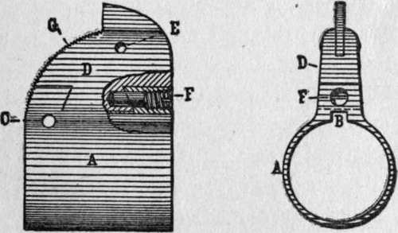

Rifle Sights. Continued
Description
This section is from the "" book, by .
Rifle Sights. Continued
I consider it bad practice to draw fine, medium, or coarse bead, according to distance. There is too much guesswork about it. With a high power rifle, you are almost sure to overdo the matter. So, on all accounts, I prefer a plain, level bar, with small nick to mark the center, and I always aim with full bead showing just its plain circle above the bar. When firing beyond the range for which bar or leaf is adjusted, I strive to aim as many inches higher as the drop of bullet requires. For instance, with a rifle using our military cartridge and bar permanently set for a " point-blank " of one hundred and fifty yards, I carry this simple rule in my head:
200 yards = 3 inches drop 225 yards = 5 inches drop 250 yards = 8 inches drop.
Up to one hundred and seventy-five yards I make no allowance at all, as the variation does not exceed a couple of inches anywhere. It is easier to remember "three, five, eight," and aim accordingly, than to cut off precisely an infinitesimal fraction of an inch at the muzzle while looking keenly at the distant mark.
The method of attaching open sights to a rifle barrel is not of much moment with low power arms. With weapons using heavy charges that quickly heat the barrel to a sizzling temperature, it is quite another matter. The cheapest way to mount sights is in tapered slots dovetailed in the barrel. It is easy, then, to align the sights by tapping them over to right or left until a proper group is made. A slot weakens the barrel, and impairs its accuracy, if the barrel be thin and the charge heavy.
Sight blocks soldered or brazed to the barrel are liable to be knocked off when the weapon is hot from rapid firing. Smokeless powder makes the barrel expand quickly, while the block remains cool, and this strains the solder, or even, tears it apart.
In rifles that have a rib on top of the barrel, milled from the solid metal, it is customary to dovetail the front sight slot lengthwise into muzzle end of rib. This prevents the sight from being knocked out of alignment. The objection is that individual rifles vary so that no standard position for the slot will suit them all, and no provision is made for adjustment sidewise.
The proper way to attach either a front or a rear open sight to a high power rifle is by a permanent band around the barrel, with movable sight base attached. We have a good example in the service arm of our army and navy, the Springfield-Mauser, commonly called " New Springfield." The front sight of this arm is pinned to a movable stud (D, fig. I/) which fits in a band (A) firmly attached to the barrel. Since rio two rifles are exactly alike, each weapon is targeted by an expert, at the armory, until the correct position of its own front sight is determined. A hole is then drilled through base of movable stud into standing part of sight band, and a screw (F) is inserted, thus securing the front sight immovably in its place. The rear sight is attached by a similar band.
Figure 17.
A peep sight on tang, frame, or cocking piece gives a longer sighting radius than an open sight on the barrel, with proportionally truer aim. The aperture of a peep sight for hunting should be considerably larger than that for target shooting. One's eye will center such a peep-hole instinctively, because the center of the hole gets more light than its edge. He will scarcely be conscious of using a rear sight at all.
In good light he can catch true aim quicker with such a peep than with any pattern of open sight, because there is no blur and because he need waste no time in cutting off the right amount of bead. He can see the whole object aimed at and a considerable space all around it. A distinct advantage of the peep over a plain open sight is that elevation can be adjusted to any range, and for any cartridge, with exactitude. One can set his " point-blank" to suit himself; he can use various charges in the same gun without guesswork as to elevations.
An aperture of any kind is bothersome in the gray of dawn or twilight and in the murk of tall forests when the sky is overcast. To provide for shooting on such occasions (often one's best chance) there should be an auxiliary leaf sight on the barrel. Both it and the aperture must turn down out of the way of the other, for the two cannot be used together without blurring everything.
For target shooting and for hunting small game, the best position for a peep sight is on the tang. On a rifle of more power, a tang sight is not suitable, unless the arm is hammerless and its bolt retreats into the receiver, in which case a short tang sight can be mounted well forward, where it is not in the way of eye or hand. A peep is at its best when not more than two inches from the eye.
A bolt action rifle may have a peep sight attached to the receiver. This position is objectionable because it puts the aperture so far away that it is hard to center in dim light. To provide for this, there should also be a turn-down leaf on the barrel, as previously described. Unfortunately, nearly all patterns of receiver sights are made with the peep permanently erect. This should be remedied.
Receiver sights, as a rule are slow and awkward to reset at different elevations and the divisions are too coarse. A receiver sight that clamps in position merely by a lever is not sure to " stay put." By far the best sight of this class is the new Lyman for the Springfield-Mauser, operating by a milled-head screw.
A peep sight attached to the cocking piece has this advantage, that it draws back close to the eye, where it should be, in aiming, yet flies forward out of the way before the gun can recoil. I have used such a sight on a bolt action rifle with complete satisfaction. The anticipated variation from wobbling of cocking piece did not occur.
If one can afford it, the best possible combination of sights for open country is a " gold 99 bead front, permanent open rear with one leaf, and a telescope sight of the best modern pattern, the latter detachable in a moment, and ordinarily carried like a spyglass in leather scabbard slung from the shoulder. The open sights would be used for big game near by; the telescope for small game and for all long shots, running or standing.
Beware, however, of the old-fashioned telescope sight with long tube and delicate mountings, permanently attached to the barrel. It is not a practical instrument—not even for target shooting.
Its field (area visible through 'scope) is so small that one must grope and bob around to find his mark, and then can see but a short distance around it. If the object moves, he loses it.
The relief (distance from eye to eyepiece) is generally so short on such telescopes that the tube projects backward from the breech, forming a hook to catch in all manner of obstacles and quite unsafe to use on a rifle of much recoil. The lenses are easily jarred loose. The crosshairs are prone to break, or to separate in filaments when the weather changes. The adjusting screws stick out like sore thumbs, ever in the way of twigs and trouble. Such a 'scope is a delicate thing to carry, even to a rifle range, and is quite unserviceable in the field.
A modern telescope sight of good make is a short instrument (not over ten inches long, and some of them only six inches) that can be snapped on the rifle in a few seconds and detached as readily. It is sure to return to the same adjustment every time. Its construction throughout is strong enough for rifles of the highest power and for any kind of service—forest hunting, saddle work, or mountaineering—in short, it will stand what a spyglass will stand, and is as easily carried. Changes of elevation are made by a milled head operating the crosshairs, while the tube remains rigid. The mount is hollow, so that the open sights can be used, with telescope in position and without mounting the 'scope awkwardly on the side. The tube itself does not project back of the rifle's breech, but has a soft rubber eye-cup to cut off side light. It has a wide field and brilliant illumination, is adjustable to any eyesight, and corrects defects of vision.
It is a grave mistake to employ a high power in a rifle telescope. Five diameters should be the limit, for hunting, and three is more satisfactory all-round. The lower the power, the wider will be the field of vision, the brighter the illumination, and .the less one's own tremor will be magnified, with consequent swaying of the image. A three-power 'scope makes an object three hundred yards distant appear only one hundred yards away, and that is good enough. The field of a good prism telescope of three-power is seventeen yards at one hundred yards, and is proportional at other distances. This means that, in aiming, the object is magnified to three times its apparent height to the naked eye, and that the shooter can see everything within seventeen feet of it at one hundred feet, or seventeen yards at one hundred yards.
An open sight cuts off the lower half of field entirely; the telescope shows everything below, as well as above, and one can shift elevation at will, in the twinkling of an eye, by merely aiming high or low. It is an advantage to have stadia marks in the scope for this purpose. I once had a fifteen-inch .22 rifle, with telescope attached, that had dots on the vertical crosshair. Using long-rifle cartridges, it was easy to do very fine shooting at surprising distances. Notwithstanding the excessively high trajectory, one could catch any elevation he wanted. With this tiny gun, a ten-year-old boy made bull'seye after bull'seye at two hundred yards the first time he tried it, firing from muzzle-and-elbow rest, on a still day.
The extremely compact telescope sight now issued to expert riflemen in our army and national guard serves as a rough but practical range-finder. When it was first brought out, a rifle equipped with it was tested by Captain Casey of the American team. A regular one thousand-yard target, with thirty-six inch bull'seye, had been placed so far away that the bull was a mere speck to the naked eye. Casey did not know the distance and set in to get the range for himself, by firing from the prone position. His first shot ricochetted into the target, scoring 3, the second was a 4, and the next eighteen bullets struck the bull'seye, the wildest of them being no more than eighteen inches from dead center. The distance was then found to be one mile. The more one knows of rifle shooting, the better he can appreciate such a triumph for ammunition, gun, sight, and man.
Continue to: